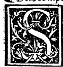

CHAPTER XVI¶
On the Composition and Mouldings of the Cornice (Cornicione).

Above the frieze (zophoro, \(V\)) is assembled the crowning upper block called the cornice (cornice by the Ancients, cornicione by the Moderns, depicted with its letters \(k, l, m, o\) in Plate 0215).
Sequence of Mouldings in the Cornice from Bottom to Top (Plate 0215)
Starting immediately above the frieze \(V\) and ascending in order to the summit:
The Frieze Cymatium and Five Stepped Fillets (*Gradetti / Tenie*, marked :math:`k`): Immediately upon the frieze is placed a small rectangular fillet or reglet (regolo ouer gradetto, called tenia by the Ancients), projecting outward by an amount equal to its own height; in richly moulded cornices (as seen in Plate 0215), up to five such small stepped fillets and mouldings (\(k\)) are placed for ornamental articulation between the frieze and the dentils.
The Dentils (*Denticoli / Denticelli / Rastro*, marked :math:`l`): Above the taenia \(k\) rests the broader band called denticoli by Vitruvius, denticelli by modern masons, and sometimes rastro from its likeness to the teeth of a rake (rastrello facto a denti).
Taenia and Astragal (*Paternostri / Fusaroli*): Above the dentils \(l\) is placed another narrow fillet (tenia), then a rounded bead-and-reel moulding (bastone detto paternostri ouero fusaroli), and above that another fillet (quadra ouer tenia).
The Corona or Dripstone (*Corona / Gocciolatoio*, marked :math:`m`): Next is set the projecting corona (\(m\)), so called by the Ancients and named the gocciolatoio (dripstone) by our modern masons because its broad overhang throws rainwater clear of the frieze, architrave, and columns below.
Upper Taenia, Bead-and-Reel (*Paternostri*), and Fillet: Above the corona \(m\) follow in order another fillet (tenia), another course of bead-and-reel (paternostri e fusaroli), and another small fillet (quadretta).
The Sima or Cyma Recta (*Sima / Gola dela Cornice*, marked :math:`o`): Penultimately rises the curved sima (\(o\)), which our modern masons call the throat of the cornice (gola dela cornice).
The Crowning Acroterium or Fillet (*Acrotherio / Tenia*): Finally, at the very top above the sima \(o\), is placed the crowning fillet or acroterium (acrotherio).
And throughout the entire cornice—just as we enjoined for the stylobate (Chapter VI) and the epistyle (Chapter XIV)—every single step and moulding must project outward (*sporti in fore*) to the right and left by an amount equal to its own vertical height (\(1 : 1\) projection), and all blocks must be securely cramped and leaded together (ben incatenato con ferri e piombi) so that the whole edifice stands unshakable and harmonious to the eye!